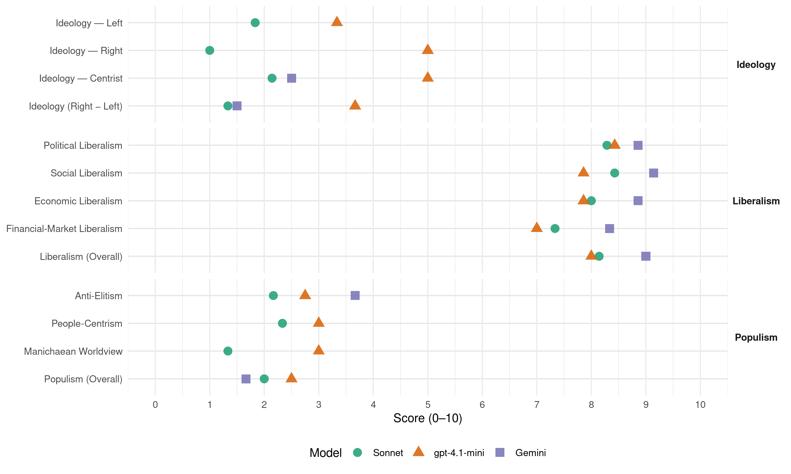

LP (Lithuania, 2020)
manifesto_id 88451_202010
Get full text: This site shows derived annotations and short verbatim quotes only. The full manifesto text is © Manifesto Project / WZB — obtain it via manifesto-project.wzb.eu using the manifesto_id above.
Headline scores
| Dimension | Sonnet | gpt-4.1-mini | Gemini |
|---|---|---|---|
| Populism (Overall) | 2.0 | 2.5 | 1.7 |
| Anti-Elitism | 2.2 | 2.8 | 3.7 |
| People-Centrism | 2.3 | 3.0 | – |
| Manichaean Worldview | 1.3 | 3.0 | – |
| Ideology (Right − Left) | 1.3 | 3.7 | 1.5 |
| Liberalism (Overall) | 8.1 | 8.0 | 9.0 |
| Political Liberalism | 8.3 | 8.4 | 8.9 |
| Social Liberalism | 8.4 | 7.9 | 9.1 |
| Economic Liberalism | 8.0 | 7.9 | 8.9 |
| Financial-Market Liberalism | 7.3 | 7.0 | 8.3 |
Evidence per dimension
Economic Liberalism
Gemini · score 9.0 · verified · chunk 1
“0 proc. pelno mokestis reinvestuojamam pelnui”
2.3 Verslo aplinka ir mokesčiai 2.3.1 Lietuva 1-a Europos Sąjungos „Doing Business“ reitinge 2.3.2 0 proc. pelno mokestis reinvestuojamam pelnui
Gemini · score 9.0 · verified · chunk 2
“kontrolė ir biurokratija turi drastiškai mažėti”
Valstybės intervencijos į rinkos santykius, kontrolė ir biurokratija turi drastiškai mažėti, jei norime padidinti privataus
Gemini · score 9.0 · verified · chunk 3
“reguliavimo ir procedūrų palankumą verslui”
atsilieka nuo lyderiaujančių ES šalių pagal reguliavimo ir procedūrų palankumą verslui kurtis ir vykdyti veiklą.
Gemini · score 8.0 · verified · chunk 4
“bendradarbiaujant su verslu ir pilietine visuomene”
atsakingo vartojimo švietimas, tvarus gamtos išteklių naudojimas, taikant technologijas. Manome, kad bendradarbiaujant su verslu ir pilietine visuomene pasieksime esminį pokytį kovoje su
Gemini · score 9.0 · verified · chunk 5
“Laisvesnis darbo santykių reguliavimas yra neišvengiama realybė”
pasirinkimo laisvės, kurią turi savarankiškai dirbantys asmenys. Laisvesnis darbo santykių reguliavimas yra neišvengiama realybė globalėjančiame pasaulyje.
Gemini · score 9.0 · verified · chunk 6
“panaudoti visas Europos Sąjungos vidaus rinkos galimybes”
ekonomine ir politine prasme. Privalome panaudoti visas Europos Sąjungos vidaus rinkos galimybes. Mus skiriančios valstybių sienos
Gemini · score 9.0 · verified · chunk 7
“atviros ir laisvos rinkos dėsniais”
infrastruktūrą numatome labiau pritaikyti projektinei veiklai, grįstai atviros ir laisvos rinkos dėsniais, kuomet didesnė
gpt-4.1-mini · score 8.0 · verified · chunk 1
“Lietuva 1-a Europos Sąjungos „Doing Business“ reitinge”
2.3.1 Lietuva 1-a Europos Sąjungos „Doing Business“ reitinge 2.3.2 0 proc. pelno mokestis reinvestuojamam pelnui 2.3.3 Jokių naujų mokesčių 2.3.4 „Mikroverslui“ palanki aplinka 2.3.5 Mažesnis gyventojų pajamų apmokestinimas 2.3.6 Paprastesnė ir efektyvesnė socialinio draudimo sistema 2.3.7 Verslas – be priežiūros naštos.
gpt-4.1-mini · score 8.0 · verified · chunk 2
“Valstybės intervencijos į rinkos santykius, kontrolė ir biurokratija turi drastiškai mažėti”
Valstybės intervencijos į rinkos santykius, kontrolė ir biurokratija turi drastiškai mažėti, jei norime padidinti privataus sektoriaus veiklos efektyvumą. Visgi Lietuvoje vis dar gajus įtarus požiūris į verslą, susiformavęs per ankstyvą naujai nepriklausomos Lietuvos laikotarpį.
gpt-4.1-mini · score 8.0 · verified · chunk 3
“Reguliavimo ir procedūrų supaprastinimas bei didesnis aiškumas jų įgyvendinime skatintų verslus nuo pat pradžių veiklą pradėti skaidriai”
… Reguliavimo ir procedūrų supaprastinimas bei didesnis aiškumas jų įgyvendinime skatintų verslus nuo pat pradžių veiklą pradėti skaidriai ir koncentruotis į veiklos vystymą, o ne į privalomą atitikimą formaliems procesams. …
gpt-4.1-mini · score 8.0 · verified · chunk 4
“Lietuvos mokestinė sistema turi palaikyti aplinkai draugišką politiką”
4.2 Ekonominė ir mokestinė aplinkosaugos politika Prieš kelis šimtus metų Anglijoje ir Prancūzijoje nekilnojamo turto mokesčius apskaičiuodavo pagal tai, kiek pastatuose būdavo langų – dar šiandien dėl to galima rasti pastatų, kurių langai buvo užmūryti siekiant sumažinti mokesčius. Mokestinė politika formuoja valstybės raidą – Lietuvos mokestinė sistema turi palaikyti aplinkai draugišką politiką.
gpt-4.1-mini · score 7.0 · verified · chunk 5
“Būdami ES nariai dalinamės bendra erdve su kitomis bendrijos narėmis”
Būdami ES nariai dalinamės bendra erdve su kitomis bendrijos narėmis, todėl bendradarbiaudami su kitomis valstybėmis narėmis turime iškelti sau tikslą sukurti stiprią ES.
gpt-4.1-mini · score 8.0 · verified · chunk 6
“Laisvesnės prekybos režimo tarp dviejų kontinentų”
Lietuva, maža dinamiška ir inovatyvi ekonomika tik laimėtų nuo laisvesnės prekybos režimo tarp dviejų kontinentų. Laisvės partija mano, kad Lietuvos užsienio politika turi turėti aiškią specializaciją.
gpt-4.1-mini · score 8.0 · verified · chunk 7
“grįstai atviros ir laisvos rinkos dėsniais, kuomet didesnė įstaigų finansavimo dalis paskirstoma per projektinių veiklų finansavimo įrankius”
… Kultūros įstaigų infrastruktūrą numatome labiau pritaikyti projektinei veiklai, grįstai atviros ir laisvos rinkos dėsniais, kuomet didesnė įstaigų finansavimo dalis paskirstoma per projektinių veiklų finansavimo įrankius, taip skatinant konkurenciją ir kūrybiškumą visuose kultūros sektoriuose. Atversime renginiams skirtas erdves, kad jos būtų vienodai prieinamos tiek valstybinėms institucijoms, tiek ir visuomeniniam bei privačiam sektoriams. …
Sonnet · score 9.0 · verified · chunk 2
“Valstybės intervencijos į rinkos santykius, kontrolė ir biurokratija turi drastiškai mažėti”
Valstybės intervencijos į rinkos santykius, kontrolė ir biurokratija turi drastiškai mažėti, jei norime padidinti privataus sektoriaus veiklos efektyvumą
Sonnet · score 8.0 · verified · chunk 3
“Neįvesime jokių naujų mokesčių”
2.3.3 Jokių naujų mokesčių. Neįvesime jokių naujų mokesčių, o esami mokesčiai nebus keičiami, nebent juos mažinant, siekiant užtikrinti mokesčių sistemos stabilumą.
Sonnet · score 7.0 · verified · chunk 4
“Laisvesnis darbo santykių reguliavimas yra neišvengiama”
Laisvesnis darbo santykių reguliavimas yra neišvengiama realybė globalėjančiame pasaulyje. Pradėdami nuo pilotinių projektų atskiruose sektoriuose ir įmonėse
Sonnet · score 8.0 · verified · chunk 5
“įdarbinimo paslaugas pirksime iš privačių tiekėjų”
iš esmės peržiūrėsime Užimtumo tarnybos veiklą ir procesus bei ilgainiui ją uždarysime, o įdarbinimo paslaugas pirksime iš privačių tiekėjų
Sonnet · score 8.0 · verified · chunk 6
“laisvesnės prekybos režimo tarp dviejų kontinentų”
Lietuva, maža dinamiška ir inovatyvi ekonomika tik laimėtų nuo laisvesnės prekybos režimo tarp dviejų kontinentų
Sonnet · score 8.0 · verified · chunk 7
“atviros ir laisvos rinkos dėsniais”
projektinei veiklai, grįstai atviros ir laisvos rinkos dėsniais, kuomet didesnė įstaigų finansavimo dalis paskirstoma
Financial-Market Liberalism
Gemini · score 8.0 · verified · chunk 1
“Akcijų biržoje – visų pagrindinių Valstybės įmonių akcijos”
10.3 Akcijų biržoje – visų pagrindinių Valstybės įmonių akcijos 10.4 Politikos formavimo ir jos įgyvendinimo stiprinimas
Gemini · score 8.0 · verified · chunk 5
“Skatinsime rizikos kapitalo fondų veiklą”
valstybė turi šią sritį prioretizuoti. Skatinsime rizikos kapitalo fondų veiklą, kurių investicijos padėtų jauniems
Gemini · score 9.0 · verified · chunk 7
“akcijų biržoje „listinguosime“ visas pagrindines”
Šiems iššūkiams įveikti siūlome sprendimą: akcijų biržoje „listinguosime“ visas pagrindines Lietuvos valstybines įmones
gpt-4.1-mini · score 7.0 · verified · chunk 1
“Investicijų smulkioms ir vidutinėms įmonėms planas”
2.2.2 Investicijų smulkioms ir vidutinėms įmonėms planas 2.3.7 Verslas – be priežiūros naštos 2.3.6 Paprastesnė ir efektyvesnė socialinio draudimo sistema.
gpt-4.1-mini · score 7.0 · verified · chunk 2
“supaprastinsime dabar galiojančios pelno mokesčio lengvatos taikymą”
Trumpalaikėje perspektyvoje, supaprastinsime dabar galiojančios pelno mokesčio lengvatos taikymą – įvesime „žaliąjį koridorių“ paraiškų įvertinimui Mokslo, inovacijų ir technologijų agentūroje (MITA). MITA privalės įvertinti paraiškas per 10 d.d., išskyrus atvejus, kai reikalingas išorinis ekspertinis vertinimas (dabar MITA įsipareigojusi išvadą pateikti per 2 mėn.). Ilgalaikėje perspektyvoje panaikinsime pelno mokestį reinvestuojamam pelnui.
gpt-4.1-mini · score 7.0 · verified · chunk 6
“ES biudžeto formavimo principai turi būti peržiūrėti”
Manome, kad ES biudžeto formavimo principai turi būti peržiūrėti. Manome, kad ES biudžetas neturėtų būti surenkamas iš šalių narių pavedimų.
gpt-4.1-mini · score 7.0 · verified · chunk 7
“„listinguosime“ visas pagrindines Lietuvos valstybines įmones ir užtikrinsime, kad „listingavimas“ nebūtų tik nominalus”
… sprendimą: akcijų biržoje „listinguosime“ visas pagrindines Lietuvos valstybines įmones ir užtikrinsime, kad „listingavimas“ nebūtų tik nominalus, bet akcijomis būtų prekiaujama aktyviai. „Listinguojamoms“ bendrovėms būtų taikomi aukščiausi ES ir nacionalinių teisės aktų reglamentuojami skaidrumo ir efektyvumo reikalavimai: periodinės veiklos ir finansinės ataskaitos, rengiamos pagal tarptautinius finansinės atskaitomybės standartus, viešai skelbiami esminiai įvykiai, taikomas bendrovių valdymo kodeksas. …
Sonnet · score 8.0 · verified · chunk 1
“Akcijų biržoje – visų pagrindinių Valstybės įmonių akcijos”
10.3Akcijų biržoje – visų pagrindinių Valstybės įmonių akcijos 10.4Politikos formavimo ir jos įgyvendinimo stiprinimas
Sonnet · score 8.0 · verified · chunk 2
“pritraukti daugiau nebankinių investicijų”
Siekdami pritraukti daugiau nebankinių investicijų į Lietuvos smulkų ir vidutinį verslą, remsimės gerąja Jungtinės Karalystės patirtimi
Sonnet · score 7.0 · verified · chunk 3
“kreditorių atgaunamo turto vertę”
Tai sumažins bendrus proceso kaštus ir padidins kreditorių atgaunamo turto vertę. Mažųjų akcininkų teisių apsauga (37 vieta pasaulyje).
Sonnet · score 7.0 · verified · chunk 4
“ekologiškam finansavimui ir aplinkos fiskalinei reformai”
Sudarysime sąlygas ekologiškam finansavimui ir aplinkos fiskalinei reformai – užtikrinant subsidijų skaidrumą ir skatinant žalingų subsidijų panaikinimą
Sonnet · score 7.0 · verified · chunk 5
“rizikos kapitalo fondų veiklą”
Skatinsime rizikos kapitalo fondų veiklą, kurių investicijos padėtų jauniems žmonėms pradėti bei plėtoti verslą
Sonnet · score 7.0 · verified · chunk 6
“Europos obligacijų emisijos išleidimui”
Laisvės partija pritaria Europos obligacijų emisijos išleidimui ir šio instrumento efektyviam panaudojimui
Political Liberalism
Gemini · score 9.0 · verified · chunk 1
“Mokytojas – Lietuvos viduriniosios klasės pamatas, demokratinės valstybės atrama”
Laisvų, savarankiškų ir atsakingų asmenybių ugdymas. Visiems prieinama ir pasiekiama gera mokykla. Mokytojas – Lietuvos viduriniosios klasės pamatas, demokratinės valstybės atrama.
Gemini · score 8.0 · verified · chunk 2
“demokratiją bei žmogaus teises gerbiančių”
civilizacinio pobūdžio konfliktą tarp demokratiją bei žmogaus teises gerbiančių politinių jėgų ir jas atmetančiųjų.
Gemini · score 9.0 · verified · chunk 3
“kertiniams demokratinės visuomenės principams”
Saviraiškos laisvei ir teisės viršenybės principui – kertiniams demokratinės visuomenės principams – šiandien yra iškilęs pavojus
Gemini · score 9.0 · verified · chunk 4
“kertinės mūsų demokratinės valstybės vertybės”
Žodžio, saviraiškos ir sąžinės laisvės yra kertinės mūsų demokratinės valstybės vertybės. Nuosekliai ir atkakliai ginsime šias
Gemini · score 9.0 · verified · chunk 5
“žmogaus teisių ir laisvių, įgyvendinamų liberalios demokratijos”
Lietuvos užsienio politika turi stovėti ant žmogaus teisių ir laisvių, įgyvendinamų liberalios demokratijos, tarptautinės teisės viršenybės
Gemini · score 10.0 · verified · chunk 6
“įgyvendinamų liberalios demokratijos, tarptautinės teisės viršenybės”
Lietuvos užsienio politika turi stovėti ant žmogaus teisių ir laisvių, įgyvendinamų liberalios demokratijos, tarptautinės teisės viršenybės ir daugiašališko sprendimų priėmimo sąlygomis
Gemini · score 8.0 · verified · chunk 7
“Atversime valstybės institucijų duomenis”
nevyriausybines organizacijas. Atversime valstybės institucijų duomenis, nustatysime aiškias planavimo
gpt-4.1-mini · score 9.0 · verified · chunk 1
“Mokytojas – Lietuvos viduriniosios klasės pamatas, demokratinės valstybės atrama”
1.2.2 Mokytojas – Lietuvos viduriniosios klasės pamatas, demokratinės valstybės atrama Pirmiausia, mokytojai turi gauti adekvatų atlyginimą – ne mažesnį nei vidutinis aukštojo išsilavinimo reikalaujančių darbo vietų apmokėjimo vidurkis šalyje.
gpt-4.1-mini · score 7.0 · verified · chunk 2
“aukštasis mokslas yra nesusijęs su valstybės demokratinės kultūros stiprinimu”
Aukštosios mokyklos neturi tapti valstybės institucijų tarnaitėmis ar būti priverstos dalyvauti politiniuose žaidimuose dėl valstybinių užsakymų ir su jais atplaukiančių lėšų skirstymo, tačiau tuo pačiu būtų keista manyti, kad aukštasis mokslas yra nesusijęs su valstybės demokratinės kultūros stiprinimu. Šiandien pasaulyje stebime kylantį naują civilizacinio pobūdžio konfliktą tarp demokratiją bei žmogaus teises gerbiančių politinių jėgų ir jas atmetančiųjų.
gpt-4.1-mini · score 9.0 · verified · chunk 3
“Žodžio, saviraiškos ir sąžinės laisvės yra kertinės mūsų demokratinės valstybės vertybės”
… Žodžio, saviraiškos ir sąžinės laisvės yra kertinės mūsų demokratinės valstybės vertybės. Nuosekliai ir atkakliai ginsime šias laisves nuo cenzūros ir nepagrįstų suvaržymų. …
gpt-4.1-mini · score 9.0 · verified · chunk 4
“Žodžio, saviraiškos ir sąžinės laisvės yra kertinės mūsų demokratinės valstybės vertybės”
3.7 Žodžio saviraiškos ir sąžinės laisvės Žodžio, saviraiškos ir sąžinės laisvės yra kertinės mūsų demokratinės valstybės vertybės. Nuosekliai ir atkakliai ginsime šias laisves nuo cenzūros ir nepagrįstų suvaržymų. Pastaruoju metu Lietuvoje padaugėjo teisėkūros iniciatyvų, siekiančių susiaurinti žodžio ir saviraiškos laisvės ribas – išplėsti draudžiamos skleisti informacijos sąrašą, ginti valstybės vadovų autoritetą žodžio laisvės sąskaita ir net įvesti cenzūrą, nurodant žiniasklaidai, kokio pobūdžio naujienas ji turi skelbti.
gpt-4.1-mini · score 8.0 · verified · chunk 5
“Lietuva – aktyvi Europos Sąjungos narė ir patikima Šiaurės Atlanto aljanso sąjungininkė”
Lietuva – aktyvi Europos Sąjungos narė ir patikima Šiaurės Atlanto aljanso sąjungininkė, todėl nedvejodami turime būti kartu su Vakarų pasaulio valstybėmis, kurioms demokratija, žmogaus teisės ir laisvės nėra reliatyvios sąvokos, o tarptautinė teisė nėra rekomendacija.
gpt-4.1-mini · score 9.0 · verified · chunk 6
“demokratijos, žmogaus teisių ir laisvių, teismų ir žiniasklaidos nepriklausomumo ir nešališkumo bei teisės viršenybės principus”
ES gebėjimas efektyviai veikti užsienio politikos srityje priklauso ir nuo to, kad visos ES narės yra vieningos įgyvendinant demokratijos, žmogaus teisių ir laisvių, teismų ir žiniasklaidos nepriklausomumo ir nešališkumo bei teisės viršenybės principus.
gpt-4.1-mini · score 8.0 · verified · chunk 7
“užtikrinsime skaidrius konkursus, paremtus aiškiais kriterijais”
… dalyvautų talentingiausi kūrėjai ir geriausi savo srities specialistai – užtikrinsime skaidrius konkursus, paremtus aiškiais kriterijais ir vienodomis sąlygomis visiems kultūros sferos veikėjams, nepriklausomai nuo to ar tai viešasis ar privatus sektorius. 9.2.2Globali kultūra …
Sonnet · score 9.0 · verified · chunk 1
“demokratinės valstybės atrama”
Mokytojas – Lietuvos viduriniosios klasės pamatas, demokratinės valstybės atrama.
Sonnet · score 8.0 · verified · chunk 2
“demokratiją bei žmogaus teises gerbiančių politinių jėgų”
Šiandien pasaulyje stebime kylantį naują civilizacinio pobūdžio konfliktą tarp demokratiją bei žmogaus teises gerbiančių politinių jėgų ir jas atmetančiųjų
Sonnet · score 8.0 · verified · chunk 3
“Saviraiškos laisvei ir teisės viršenybės principui”
Saviraiškos laisvei ir teisės viršenybės principui – kertiniams demokratinės visuomenės principams – šiandien yra iškilęs pavojus net kai kuriose Europos Sąjungos valstybėse.
Sonnet · score 8.0 · verified · chunk 4
“Žodžio, saviraiškos ir sąžinės laisvės yra kertinės”
Žodžio, saviraiškos ir sąžinės laisvės yra kertinės mūsų demokratinės valstybės vertybės. Nuosekliai ir atkakliai ginsime šias laisves nuo cenzūros ir nepagrįstų suvaržymų.
Sonnet · score 8.0 · verified · chunk 5
“demokratija, žmogaus teisės ir laisvės nėra reliatyvios”
Vakarų pasaulio valstybėmis, kurioms demokratija, žmogaus teisės ir laisvės nėra reliatyvios sąvokos, o tarptautinė teisė nėra rekomendacija
Sonnet · score 9.0 · verified · chunk 6
“demokratija, žmogaus teisių ir daugiašališkumo principai”
įsivaizdavimas, kad pasaulyje amžiams įsitvirtino liberalios demokratijos, žmogaus teisių ir daugiašališkumo principai
Sonnet · score 8.0 · verified · chunk 7
“skaidrumą, gerą vadybą”
Tai užtikrins skaidrumą, gerą vadybą ir, žinoma, dividendus valstybei. Viešasis sektorius gali ir turi sklandžiai veikti
Liberalism (Overall)
Gemini · score 9.0 · verified · chunk 1
“Imamės atsakomybės kurti klasikinėmis liberaliomis idėjomis grįstą politiką”
Įkūrėme Laisvės partiją, nes tikime laisvos, kūrybingos, atsakingos, drąsios Lietuvos ateitimi. Imamės atsakomybės kurti klasikinėmis liberaliomis idėjomis grįstą politiką, nes suprantame, kad niekas kitas už mus to nepadarys.
Gemini · score 8.0 · verified · chunk 2
“Laisvės partijos, kaip liberalios jėgos”
pamoka ir pavyzdys mums, kaip visuomenei, ir Laisvės partijos, kaip liberalios jėgos, idėjų patvirtinimas realybėje.
Gemini · score 9.0 · verified · chunk 3
“kertiniams demokratinės visuomenės principams”
Saviraiškos laisvei ir teisės viršenybės principui – kertiniams demokratinės visuomenės principams – šiandien yra iškilęs pavojus
Gemini · score 9.0 · verified · chunk 4
“kertinės mūsų demokratinės valstybės vertybės”
Žodžio, saviraiškos ir sąžinės laisvės yra kertinės mūsų demokratinės valstybės vertybės. Nuosekliai ir atkakliai ginsime šias
Gemini · score 9.0 · verified · chunk 5
“žmogaus teisių ir laisvių, įgyvendinamų liberalios demokratijos”
Lietuvos užsienio politika turi stovėti ant žmogaus teisių ir laisvių, įgyvendinamų liberalios demokratijos, tarptautinės teisės viršenybės
Gemini · score 10.0 · verified · chunk 6
“įgyvendinamų liberalios demokratijos, tarptautinės teisės viršenybės”
Lietuvos užsienio politika turi stovėti ant žmogaus teisių ir laisvių, įgyvendinamų liberalios demokratijos, tarptautinės teisės viršenybės ir daugiašališko sprendimų priėmimo sąlygomis
Gemini · score 9.0 · verified · chunk 7
“atviros ir laisvos rinkos dėsniais”
infrastruktūrą numatome labiau pritaikyti projektinei veiklai, grįstai atviros ir laisvos rinkos dėsniais, kuomet didesnė
gpt-4.1-mini · score 8.0 · verified · chunk 1
“Mokytojas – Lietuvos viduriniosios klasės pamatas, demokratinės valstybės atrama”
1.2.2 Mokytojas – Lietuvos viduriniosios klasės pamatas, demokratinės valstybės atrama Pirmiausia, mokytojai turi gauti adekvatų atlyginimą – ne mažesnį nei vidutinis aukštojo išsilavinimo reikalaujančių darbo vietų apmokėjimo vidurkis šalyje.
gpt-4.1-mini · score 7.0 · verified · chunk 2
“Valstybės intervencijos į rinkos santykius, kontrolė ir biurokratija turi drastiškai mažėti”
Valstybės intervencijos į rinkos santykius, kontrolė ir biurokratija turi drastiškai mažėti, jei norime padidinti privataus sektoriaus veiklos efektyvumą. Visgi Lietuvoje vis dar gajus įtarus požiūris į verslą, susiformavęs per ankstyvą naujai nepriklausomos Lietuvos laikotarpį.
gpt-4.1-mini · score 9.0 · verified · chunk 3
“Žodžio, saviraiškos ir sąžinės laisvės yra kertinės mūsų demokratinės valstybės vertybės”
… Žodžio, saviraiškos ir sąžinės laisvės yra kertinės mūsų demokratinės valstybės vertybės. Nuosekliai ir atkakliai ginsime šias laisves nuo cenzūros ir nepagrįstų suvaržymų. …
gpt-4.1-mini · score 9.0 · verified · chunk 4
“Žodžio, saviraiškos ir sąžinės laisvės yra kertinės mūsų demokratinės valstybės vertybės”
3.7 Žodžio saviraiškos ir sąžinės laisvės Žodžio, saviraiškos ir sąžinės laisvės yra kertinės mūsų demokratinės valstybės vertybės. Nuosekliai ir atkakliai ginsime šias laisves nuo cenzūros ir nepagrįstų suvaržymų. Pastaruoju metu Lietuvoje padaugėjo teisėkūros iniciatyvų, siekiančių susiaurinti žodžio ir saviraiškos laisvės ribas – išplėsti draudžiamos skleisti informacijos sąrašą, ginti valstybės vadovų autoritetą žodžio laisvės sąskaita ir net įvesti cenzūrą, nurodant žiniasklaidai, kokio pobūdžio naujienas ji turi skelbti.
gpt-4.1-mini · score 7.0 · verified · chunk 5
“Lietuva – aktyvi Europos Sąjungos narė ir patikima Šiaurės Atlanto aljanso sąjungininkė”
Lietuva – aktyvi Europos Sąjungos narė ir patikima Šiaurės Atlanto aljanso sąjungininkė, todėl nedvejodami turime būti kartu su Vakarų pasaulio valstybėmis, kurioms demokratija, žmogaus teisės ir laisvės nėra reliatyvios sąvokos, o tarptautinė teisė nėra rekomendacija.
gpt-4.1-mini · score 8.0 · verified · chunk 6
“demokratijos, žmogaus teisių ir laisvių, teismų ir žiniasklaidos nepriklausomumo ir nešališkumo bei teisės viršenybės principus”
ES gebėjimas efektyviai veikti užsienio politikos srityje priklauso ir nuo to, kad visos ES narės yra vieningos įgyvendinant demokratijos, žmogaus teisių ir laisvių, teismų ir žiniasklaidos nepriklausomumo ir nešališkumo bei teisės viršenybės principus.
gpt-4.1-mini · score 8.0 · verified · chunk 7
“užtikrinsime skaidrius konkursus, paremtus aiškiais kriterijais”
… dalyvautų talentingiausi kūrėjai ir geriausi savo srities specialistai – užtikrinsime skaidrius konkursus, paremtus aiškiais kriterijais ir vienodomis sąlygomis visiems kultūros sferos veikėjams, nepriklausomai nuo to ar tai viešasis ar privatus sektorius. 9.2.2Globali kultūra …
Sonnet · score 9.0 · verified · chunk 1
“klasikinėmis liberaliomis idėjomis grįstą politiką”
Imamės atsakomybės kurti klasikinėmis liberaliomis idėjomis grįstą politiką, nes suprantame, kad niekas kitas už mus to nepadarys.
Sonnet · score 8.0 · verified · chunk 2
“Valstybės intervencijos į rinkos santykius, kontrolė ir biurokratija turi drastiškai mažėti”
Valstybės intervencijos į rinkos santykius, kontrolė ir biurokratija turi drastiškai mažėti, jei norime padidinti privataus sektoriaus veiklos efektyvumą
Sonnet · score 8.0 · verified · chunk 3
“laisvė – tai atsakomybė”
Laisvė – tai atsakomybė. Atsakomybė spręsti savarankiškai. Galimybė suklysti. Suklydus bandyti iš naujo.
Sonnet · score 8.0 · verified · chunk 4
“Žodžio, saviraiškos ir sąžinės laisvės yra kertinės”
Žodžio, saviraiškos ir sąžinės laisvės yra kertinės mūsų demokratinės valstybės vertybės. Nuosekliai ir atkakliai ginsime šias laisves nuo cenzūros ir nepagrįstų suvaržymų.
Sonnet · score 8.0 · verified · chunk 5
“liberalios demokratijos, tarptautinės teisės viršenybės”
Tikime, kad Lietuvos užsienio politika turi stovėti ant žmogaus teisių ir laisvių, įgyvendinamų liberalios demokratijos, tarptautinės teisės viršenybės
Sonnet · score 8.0 · verified · chunk 6
“liberalios demokratijos, tarptautinės teisės viršenybės”
Lietuvos užsienio politika turi stovėti ant žmogaus teisių ir laisvių, įgyvendinamų liberalios demokratijos, tarptautinės teisės viršenybės
Sonnet · score 8.0 · verified · chunk 7
“atviros ir laisvos rinkos dėsniais”
projektinei veiklai, grįstai atviros ir laisvos rinkos dėsniais, kuomet didesnė įstaigų finansavimo dalis paskirstoma
Anti-Elitism
Gemini · score 5.0 · verified · chunk 1
“politikams svarbias savybes – drąsą, ryžtą, tiesos sakymą – užgožė konformizmas”
Politines idėjas šiandien užgožė biurokratija ir technokratija, o politikams svarbias savybes – drąsą, ryžtą, tiesos sakymą – užgožė konformizmas, pataikavimas ir prisitaikymas.
Gemini · score 4.0 · verified · chunk 5
“privilegijuotoji valstybinių pensijų ir rentų sistema”
Lietuvoje vis dar egzistuoja privilegijuotoji valstybinių pensijų ir rentų sistema. Kol vieni, pradirbę visą gyvenimą
Gemini · score 2.0 · verified · chunk 7
“tingūs, veltėdžiai biurokratai”
atskaitomybės nebuvimas, neatsakingas ir nelankstus požiūris, tingūs, veltėdžiai biurokratai. Dėl tokio atgrasaus
gpt-4.1-mini · score 2.0 · verified · chunk 1
“Politines idėjas šiandien užgožė biurokratija ir technokratija”
Lietuvos politikoje ne tik trūksta liberalių idėjų – čia trūksta idėjų apskritai. Politines idėjas šiandien užgožė biurokratija ir technokratija, o politikams svarbias savybes – drąsą, ryžtą, tiesos sakymą – užgožė konformizmas, pataikavimas ir prisitaikymas.
gpt-4.1-mini · score 3.0 · verified · chunk 2
“įtarus požiūris į verslą, susiformavęs per ankstyvą naujai nepriklausomos Lietuvos laikotarpį”
Valstybės intervencijos į rinkos santykius, kontrolė ir biurokratija turi drastiškai mažėti, jei norime padidinti privataus sektoriaus veiklos efektyvumą. Visgi Lietuvoje vis dar gajus įtarus požiūris į verslą, susiformavęs per ankstyvą naujai nepriklausomos Lietuvos laikotarpį. Mes manome, kad išankstinis neigiamas nusistatymas, nesvarbu – smulkių ar stambių verslininkų atžvilgiu – yra didelis stabdis mums siekti turtingos, kūrybingos ir geresnės Lietuvos.
gpt-4.1-mini · score 4.0 · verified · chunk 5
“priešinsimės trumpalaikiams, nusistovėjusio modelio esmės nekeičiantiems sprendimams”
Artimiausiame laikotarpyje priešinsimės trumpalaikiams, nusistovėjusio modelio esmės nekeičiantiems sprendimams ir nepagrįstų dovanų iš biudžeto dalyboms. Ilgajame laikotarpyje keisime pensijų sistemą taip, kad ji neįtrauktų būsimų mokesčių mokėtojų
gpt-4.1-mini · score 2.0 · verified · chunk 6
“radikalių kairiųjų ir dešiniųjų judėjimai, siekiantys delegitimizuoti Sąjungą”
vidinių iššūkių – įvairūs radikalių kairiųjų ir dešiniųjų judėjimai, siekiantys delegitimizuoti Sąjungą (dažnai finansuojami ir palaikomi Rusijos) ir bandyti ją iš vidaus sunaikinti arba pertvarkyti neatpažįstamai.
Sonnet · score 3.0 · verified · chunk 1
“biurokratija ir technokratija”
Politines idėjas šiandien užgožė biurokratija ir technokratija, o politikams svarbias savybes – drąsą, ryžtą, tiesos sakymą – užgožė konformizmas
Sonnet · score 2.0 · verified · chunk 2
“centrinės valdžios lyderiai blaškėsi”
Kol centrinės valdžios lyderiai blaškėsi, Lietuvos verslininkai, nevyriausybinės organizacijos, sostinės vadovai ir pavieniai Lietuvos gyventojai masiškai ir operatyviai organizavosi ir surėmę pečius užkamšė žiojėjančias spragas
Sonnet · score 2.0 · verified · chunk 3
“Svarbios iniciatyvos pasiklysta tarpinstitucinio bendradarbiavimo labirintuose”
Trūksta politinės lyderystės ir koordinavimo tarp skirtingų valstybės institucijų… Svarbios iniciatyvos pasiklysta tarpinstitucinio bendradarbiavimo labirintuose.
Sonnet · score 2.0 · mixed · chunk 4
“valdančiosios partijos socialines problemas”
Nieko esmingai pagerinti nusistovėjusios sistemos rėmuose nepavyks, todėl valdančiosios partijos socialines problemas jau ne pirmą kartą bando ir tikriausiai bandys spręsti dovanų dalybomis prieš rinkimus.
Sonnet · score 2.0 · verified · chunk 5
“politinėmis simpatijomis”
optimizuoti medicinos įstaigų tinklą ir tai padaryti itin tiksliai, vadovaujantis duomenimis, o ne politinėmis simpatijomis
Sonnet · score 2.0 · verified · chunk 6
“Rusijos valdantis kleptokratinis režimas”
Santykiai su Rusijos Federacija yra itin sudėtingi. Rusijos valdantis kleptokratinis režimas vykdantis karinę agresiją Ukrainoje
Sonnet · score 2.0 · verified · chunk 7
“korupcija, popierizmas, išteklių švaistymas”
valstybės tarnyba yra dažniau minima neigiamuose kontekstuose – korupcija, popierizmas, išteklių švaistymas, atskaitomybės nebuvimas
Ideology — Centrist
Gemini · score 3.0 · verified · chunk 5
“privilegijuotoji valstybinių pensijų ir rentų sistema”
Lietuvoje vis dar egzistuoja privilegijuotoji valstybinių pensijų ir rentų sistema. Kol vieni, pradirbę visą gyvenimą
Gemini · score 2.0 · verified · chunk 7
“tingūs, veltėdžiai biurokratai”
atskaitomybės nebuvimas, neatsakingas ir nelankstus požiūris, tingūs, veltėdžiai biurokratai. Dėl tokio atgrasaus
gpt-4.1-mini · score 3.0 · verified · chunk 1
“Esame nauja politinė jėga, tačiau mūsų politinių lyderių darbai Lietuvos Respublikos Seime ir Vilniaus miesto savivaldybėje ne kartą parodė”
Esame nauja politinė jėga, tačiau mūsų politinių lyderių darbai Lietuvos Respublikos Seime ir Vilniaus miesto savivaldybėje ne kartą parodė, kad Lietuvos politikai galima sugrąžinti idėjas ir minėtas savybes.
gpt-4.1-mini · score 5.0 · verified · chunk 5
“Mūsų tikslas – kad kiekvienas šioje šalyje rastų sau mielos veiklos”
Darbuotojai su darbdaviais gali susitarti dėl abiems pusėms priimtinų darbo sąlygų ir individualiai derinti šeimos, mokslo, mobilumo įsipareigojimus. Mūsų tikslas – kad kiekvienas šioje šalyje rastų sau mielos veiklos ir jaustų, kad valstybė žiūri į jį su pasitikėjimu
gpt-4.1-mini · score 7.0 · verified · chunk 6
“Lietuva – aktyvi Europos Sąjungos narė ir patikima Šiaurės Atlanto aljanso sąjungininkė”
Lietuva – aktyvi Europos Sąjungos narė ir patikima Šiaurės Atlanto aljanso sąjungininkė, todėl nedvejodami turime būti kartu su Vakarų pasaulio valstybėmis, kurioms demokratija, žmogaus teisės ir laisvės nėra reliatyvios sąvokos, o tarptautinė teisė nėra rekomendacija.
Sonnet · score 2.0 · verified · chunk 1
“Esame nauja politinė jėga”
Esame nauja politinė jėga, tačiau mūsų politinių lyderių darbai Lietuvos Respublikos Seime ir Vilniaus miesto savivaldybėje ne kartą parodė
Sonnet · score 2.0 · verified · chunk 2
“atsakingų piliečių teisė būti paliktiems”
Laisvės partija pasisako už atsakingų piliečių teisę būti paliktiems ramybėje. Nesant akivaizdaus poreikio valstybei įsikišti
Sonnet · score 2.0 · verified · chunk 3
“gyventojams ir verslo subjektams”
padidinsime viešojo sektoriaus kuriamą vertę gyventojams ir verslo subjektams
Sonnet · score 3.0 · verified · chunk 4
“Laisvės partija socialinės apsaugos politikoje”
Laisvės partija socialinės apsaugos politikoje kelia šiuos pagrindinius tikslus: Taiklios ir kokybiškos socialinės paslaugos.
Sonnet · score 2.0 · verified · chunk 5
“kiekvienas šioje šalyje rastų sau mielos veiklos”
Mūsų tikslas – kad kiekvienas šioje šalyje rastų sau mielos veiklos ir jaustų, kad valstybė žiūri į jį su pasitikėjimu
Sonnet · score 2.0 · verified · chunk 6
“globalų, atvirą bendradarbiavimą ir solidarumą”
Kad Lietuva laimėtų ir klestėtų, turime rinktis globalų, atvirą bendradarbiavimą ir solidarumą
Sonnet · score 2.0 · verified · chunk 7
“skaidriai finansuojant pagal nuolat atnaujinamas”
užuot skatinus visuomenės narių kūrybiškumą, skaidriai finansuojant pagal nuolat atnaujinamas programas
Ideology — Left
gpt-4.1-mini · score 2.0 · verified · chunk 1
“Politines idėjas šiandien užgožė biurokratija ir technokratija”
Lietuvos politikoje ne tik trūksta liberalių idėjų – čia trūksta idėjų apskritai. Politines idėjas šiandien užgožė biurokratija ir technokratija, o politikams svarbias savybes – drąsą, ryžtą, tiesos sakymą – užgožė konformizmas, pataikavimas ir prisitaikymas.
gpt-4.1-mini · score 4.0 · verified · chunk 5
“Socialinė politika bus orientuota į pagalbą labiausiai stokojantiems”
Socialinė politika bus orientuota į pagalbą labiausiai stokojantiems, todėl pasisakysime už vaiko pinigų, darbo paieškos pašalpos, subsidijų komunalinėms išlaidoms atsisakymą.
gpt-4.1-mini · score 4.0 · verified · chunk 6
“radikalių kairiųjų ir dešiniųjų judėjimai, siekiantys delegitimizuoti Sąjungą”
vidinių iššūkių – įvairūs radikalių kairiųjų ir dešiniųjų judėjimai, siekiantys delegitimizuoti Sąjungą (dažnai finansuojami ir palaikomi Rusijos) ir bandyti ją iš vidaus sunaikinti arba pertvarkyti neatpažįstamai.
Sonnet · score 2.0 · verified · chunk 1
“socialinės nelygybės problemas”
Prieinamas ikimokyklinis ugdymas, sumažindamas nepalankių sąlygų perdavimo iš kartos į kartą poveikį, padeda spręsti socialinės nelygybės problemas.
Sonnet · score 2.0 · verified · chunk 2
“socialinės ir skaitmeninės nelygybės padariniai”
liko visiems smarkiai padidėjusio krūvio, psichinės sveikatos nuosmukio, paaštrėjusios socialinės ir skaitmeninės nelygybės padariniai
Sonnet · score 2.0 · verified · chunk 3
“mažiau pasiturintiems gyventojams”
Didinsime kontracepcinių priemonių prieinamumą, ypač mažiau pasiturintiems gyventojams.
Sonnet · score 2.0 · mixed · chunk 4
“pagalbą labiausiai stokojantiems”
Laisvės partija mano, kad socialinė politika turi būti taikliai orientuota į pagalbą labiausiai stokojantiems.
Sonnet · score 2.0 · verified · chunk 5
“socialinio teisingumo ir proporcingumo principais”
Skirtingi baziniai dydžiai, išmokų apskaičiavimo principai, skyrimo ir mokėjimo sąlygos nedera su socialinio teisingumo ir proporcingumo principais
Sonnet · score 1.0 · verified · chunk 6
“tolygus šios srities finansavimo didinimas”
Manome, kad tolygus šios srities finansavimo didinimas yra būtinas. Lietuva turi didžiulį potencialą kurti bendradarbiavimo
Sonnet · score 2.0 · verified · chunk 7
“pažeidžiamos visuomenės grupėms”
Užtikrinsime, kad kultūros paslaugos būtų pasiekiamos visoms pažeidžiamos visuomenės grupėms
Ideology (Right − Left)
Gemini · score 2.0 · verified · chunk 5
“privilegijuotoji valstybinių pensijų ir rentų sistema”
Lietuvoje vis dar egzistuoja privilegijuotoji valstybinių pensijų ir rentų sistema. Kol vieni, pradirbę visą gyvenimą
Gemini · score 1.0 · verified · chunk 7
“tingūs, veltėdžiai biurokratai”
atskaitomybės nebuvimas, neatsakingas ir nelankstus požiūris, tingūs, veltėdžiai biurokratai. Dėl tokio atgrasaus
gpt-4.1-mini · score 2.0 · verified · chunk 1
“Politines idėjas šiandien užgožė biurokratija ir technokratija”
Lietuvos politikoje ne tik trūksta liberalių idėjų – čia trūksta idėjų apskritai. Politines idėjas šiandien užgožė biurokratija ir technokratija, o politikams svarbias savybes – drąsą, ryžtą, tiesos sakymą – užgožė konformizmas, pataikavimas ir prisitaikymas.
gpt-4.1-mini · score 4.0 · verified · chunk 5
“Socialinė politika bus orientuota į pagalbą labiausiai stokojantiems”
Socialinė politika bus orientuota į pagalbą labiausiai stokojantiems, todėl pasisakysime už vaiko pinigų, darbo paieškos pašalpos, subsidijų komunalinėms išlaidoms atsisakymą.
gpt-4.1-mini · score 5.0 · verified · chunk 6
“radikalių kairiųjų ir dešiniųjų judėjimai, siekiantys delegitimizuoti Sąjungą”
vidinių iššūkių – įvairūs radikalių kairiųjų ir dešiniųjų judėjimai, siekiantys delegitimizuoti Sąjungą (dažnai finansuojami ir palaikomi Rusijos) ir bandyti ją iš vidaus sunaikinti arba pertvarkyti neatpažįstamai.
Sonnet · score 1.0 · verified · chunk 1
“klasikinėmis liberaliomis idėjomis grįstą politiką”
Imamės atsakomybės kurti klasikinėmis liberaliomis idėjomis grįstą politiką, nes suprantame, kad niekas kitas už mus to nepadarys.
Sonnet · score 2.0 · verified · chunk 2
“centrinės valdžios lyderiai blaškėsi”
Kol centrinės valdžios lyderiai blaškėsi, Lietuvos verslininkai, nevyriausybinės organizacijos, sostinės vadovai ir pavieniai Lietuvos gyventojai masiškai ir operatyviai organizavosi
Sonnet · score 2.0 · verified · chunk 3
“pasiklysta tarpinstitucinio bendradarbiavimo labirintuose”
Svarbios iniciatyvos pasiklysta tarpinstitucinio bendradarbiavimo labirintuose. Jau veikiančios su skaitmeninėmis technologijomis susijusios institucijos… yra per silpnos
Sonnet · score 2.0 · mixed · chunk 4
“dovanų dalybomis prieš rinkimus”
valdančiosios partijos socialines problemas jau ne pirmą kartą bando ir tikriausiai bandys spręsti dovanų dalybomis prieš rinkimus.
Sonnet · score 1.0 · verified · chunk 5
“politinėmis simpatijomis”
optimizuoti medicinos įstaigų tinklą ir tai padaryti itin tiksliai, vadovaujantis duomenimis, o ne politinėmis simpatijomis
Sonnet · score 1.0 · verified · chunk 6
“Laisvės partija tvirtai pasisako už gilesnę”
Laisvės partija tvirtai pasisako už gilesnę Europos Sąjungos integraciją
Sonnet · score 1.0 · verified · chunk 7
“tingūs, veltėdžiai biurokratai”
neatsakingas ir nelankstus požiūris, tingūs, veltėdžiai biurokratai. Dėl tokio atgrasaus valstybės tarnybos įvaizdžio
Ideology — Right
gpt-4.1-mini · score 5.0 · verified · chunk 6
“Nacionalizmas, rasizmas, ksenofobija, homofobija, seksizmas ir kitos nepakantumo apraiškos”
Nacionalizmas, rasizmas, ksenofobija, homofobija, seksizmas ir kitos nepakantumo apraiškos tampa kasdieniais reiškiniais. Lietuva nėra izoliuota sala. Lietuva – Europos Sąjungos, Vakarų pasaulio, turtingiausių liberalios demokratijos valstybių aljansų narė.
Sonnet · score 1.0 · verified · chunk 1
“Migrantų teisės”
3.3.2Migrantų teisės 3.3.3Pabėgėliai ir prieglobsčio prašytojai
Sonnet · score 1.0 · verified · chunk 2
“efektyvų kvalifikuotos darbo jėgos srautą”
privalu užtikrinti efektyvų kvalifikuotos darbo jėgos srautą iš užsienio bei užsieniečių ir reemigruojančių lietuvių integraciją
Sonnet · score 1.0 · verified · chunk 3
“suderinus su nacionalinio saugumo interesais”
turime užtikrinti, kad suderinus su nacionalinio saugumo interesais, Lietuvoje vyktų sparti 5G plėtra.
Sonnet · score 1.0 · verified · chunk 5
“Nacionalizmas, rasizmas, ksenofobija, homofobija”
Nacionalizmas, rasizmas, ksenofobija, homofobija, seksizmas ir kitos nepakantumo apraiškos tampa kasdieniais reiškiniais
Sonnet · score 1.0 · verified · chunk 6
“riboti KLR galimybes investuoti”
Lietuva turėtų riboti KLR galimybes investuoti į šalies strateginius objektus ir įmones
Sonnet · score 1.0 · verified · chunk 7
“kultūros eksportą į užsienio valstybes”
Valstybė turi skatinti kultūros eksportą į užsienio valstybes. Daugėjant Lietuvos kultūros produktų užsienyje
Manichaean Worldview
gpt-4.1-mini · score 3.0 · verified · chunk 6
“Rusijos Federacijos veikimas yra pavojingas, todėl esame įsitikinę, kad būtina tokius tarptautinės politikos žaidėjus griežtai vertinti ir izoliuoti”
Rusijos Federacijos veikimas yra pavojingas, todėl esame įsitikinę, kad būtina tokius tarptautinės politikos žaidėjus griežtai vertinti ir izoliuoti. Mūsų Tėvynė, kiekvienas iš mūsų, esame žmogaus teisių ir laisvių gynėjai,
Sonnet · score 1.0 · verified · chunk 1
“konformizmas, pataikavimas ir prisitaikymas”
politikams svarbias savybes – drąsą, ryžtą, tiesos sakymą – užgožė konformizmas, pataikavimas ir prisitaikymas
Sonnet · score 2.0 · verified · chunk 2
“konfliktas tarp gėrio ir blogio”
Perfrazavus A. Solženyciną, šis konfliktas tarp gėrio ir blogio eina per kiekvieno žmogaus širdį bei protą
Sonnet · score 1.0 · verified · chunk 3
“atsiras norinčių drausti ir riboti”
Žmogaus teisų sargyboje turime budėti kiekvieną dieną, nes, vos tik užsnūsime, atsiras norinčių drausti ir riboti.
Sonnet · score 1.0 · mixed · chunk 4
“kiti yra lygesni”
Kol vieni, pradirbę visą gyvenimą, vos suduria galą su galu, gaudami socialinio draudimo pensiją, kiti yra lygesni, pvz., dėl pasirinktos profesijos
Sonnet · score 1.0 · verified · chunk 5
“privilegijuotoji valstybinių pensijų ir rentų sistema”
Lietuvoje vis dar egzistuoja privilegijuotoji valstybinių pensijų ir rentų sistema. Kol vieni, pradirbę visą gyvenimą, vos suduria galą su galu
Sonnet · score 2.0 · verified · chunk 6
“demokratija, žmogaus teisės ir laisvės nėra reliatyvios”
nedvejodami turime būti kartu su Vakarų pasaulio valstybėmis, kurioms demokratija, žmogaus teisės ir laisvės nėra reliatyvios sąvokos
Sonnet · score 1.0 · verified · chunk 7
“tingūs, veltėdžiai biurokratai”
neatsakingas ir nelankstus požiūris, tingūs, veltėdžiai biurokratai. Dėl tokio atgrasaus valstybės tarnybos įvaizdžio
People-Centrism
gpt-4.1-mini · score 3.0 · verified · chunk 1
“tikime, kad Lietuvoje gali užaugti laisva, atsakinga, kūrybiška ir savarankiška karta”
Laisvės partiją įkūrėme Vaikų gynimo dieną pirmiausiai dėl to, jog tikime, kad Lietuvoje gali užaugti laisva, atsakinga, kūrybiška ir savarankiška karta. Ji jau šiandien gali kurti iniciatyvą skleidžiančią, įvairovę puoselėjančią bei pasauliui atvirą valstybę – Lietuvą, kurios netenkina Europos Sąjungos vidurkio pozicijos; Lietuvą, kuri turi ambicijų, drąsiai išbando naujoves ir tuo garsėja pasaulyje.
gpt-4.1-mini · score 3.0 · verified · chunk 5
“Mūsų tikslas – kad kiekvienas šioje šalyje rastų sau mielos veiklos”
Darbuotojai su darbdaviais gali susitarti dėl abiems pusėms priimtinų darbo sąlygų ir individualiai derinti šeimos, mokslo, mobilumo įsipareigojimus. Mūsų tikslas – kad kiekvienas šioje šalyje rastų sau mielos veiklos ir jaustų, kad valstybė žiūri į jį su pasitikėjimu
gpt-4.1-mini · score 3.0 · verified · chunk 6
“Mūsų Tėvynė, kiekvienas iš mūsų, esame žmogaus teisių ir laisvių gynėjai”
Mūsų Tėvynė, kiekvienas iš mūsų, esame žmogaus teisių ir laisvių gynėjai, demokratinės santvarkos puoselėtojai ir ekonominių galimybių kūrėjai. Tikime, kad Lietuvos užsienio politika turi stovėti ant žmogaus teisių ir laisvių,
Sonnet · score 2.0 · verified · chunk 1
“kviečiame Jus tapti liberalaus Lietuvos proveržio dalimi”
Prisiimame atsakomybę ir kviečiame Jus tapti liberalaus Lietuvos proveržio dalimi.
Sonnet · score 2.0 · verified · chunk 2
“atsakingų piliečių teisė būti paliktiems ramybėje”
Laisvės partija pasisako už atsakingų piliečių teisę būti paliktiems ramybėje. Nesant akivaizdaus poreikio valstybei įsikišti, visi piliečių laisvanoriški santykiai turi būti nevaržomi.
Sonnet · score 3.0 · verified · chunk 3
“gyventojams ir verslo subjektams”
padidinsime viešojo sektoriaus kuriamą vertę gyventojams ir verslo subjektams, efektyviau naudosime viešajam sektoriui skiriamas lėšas
Sonnet · score 2.0 · mixed · chunk 4
“kiekvienas šioje šalyje rastų sau mielos veiklos”
Mūsų tikslas – kad kiekvienas šioje šalyje rastų sau mielos veiklos ir jaustų, kad valstybė žiūri į jį su pasitikėjimu, kurio jis vertas.
Sonnet · score 2.0 · verified · chunk 5
“kiekvienas šioje šalyje rastų sau mielos veiklos”
Mūsų tikslas – kad kiekvienas šioje šalyje rastų sau mielos veiklos ir jaustų, kad valstybė žiūri į jį su pasitikėjimu
Sonnet · score 3.0 · verified · chunk 6
“Mūsų Tėvynė, kiekvienas iš mūsų”
Mūsų Tėvynė, kiekvienas iš mūsų, esame žmogaus teisių ir laisvių gynėjai, demokratinės santvarkos puoselėtojai
Sonnet · score 2.0 · verified · chunk 7
“visuomenės narių kūrybiškumą”
užuot skatinus visuomenės narių kūrybiškumą, skaidriai finansuojant pagal nuolat atnaujinamas programas
Populism (Overall)
Gemini · score 2.0 · verified · chunk 1
“politikams svarbias savybes – drąsą, ryžtą, tiesos sakymą – užgožė konformizmas”
Politines idėjas šiandien užgožė biurokratija ir technokratija, o politikams svarbias savybes – drąsą, ryžtą, tiesos sakymą – užgožė konformizmas, pataikavimas ir prisitaikymas.
Gemini · score 2.0 · verified · chunk 5
“privilegijuotoji valstybinių pensijų ir rentų sistema”
Lietuvoje vis dar egzistuoja privilegijuotoji valstybinių pensijų ir rentų sistema. Kol vieni, pradirbę visą gyvenimą
Gemini · score 1.0 · verified · chunk 7
“tingūs, veltėdžiai biurokratai”
atskaitomybės nebuvimas, neatsakingas ir nelankstus požiūris, tingūs, veltėdžiai biurokratai. Dėl tokio atgrasaus
gpt-4.1-mini · score 2.0 · verified · chunk 1
“Politines idėjas šiandien užgožė biurokratija ir technokratija”
Lietuvos politikoje ne tik trūksta liberalių idėjų – čia trūksta idėjų apskritai. Politines idėjas šiandien užgožė biurokratija ir technokratija, o politikams svarbias savybes – drąsą, ryžtą, tiesos sakymą – užgožė konformizmas, pataikavimas ir prisitaikymas.
gpt-4.1-mini · score 2.0 · verified · chunk 2
“įtarus požiūris į verslą, susiformavęs per ankstyvą naujai nepriklausomos Lietuvos laikotarpį”
Valstybės intervencijos į rinkos santykius, kontrolė ir biurokratija turi drastiškai mažėti, jei norime padidinti privataus sektoriaus veiklos efektyvumą. Visgi Lietuvoje vis dar gajus įtarus požiūris į verslą, susiformavęs per ankstyvą naujai nepriklausomos Lietuvos laikotarpį. Mes manome, kad išankstinis neigiamas nusistatymas, nesvarbu – smulkių ar stambių verslininkų atžvilgiu – yra didelis stabdis mums siekti turtingos, kūrybingos ir geresnės Lietuvos.
gpt-4.1-mini · score 3.0 · verified · chunk 5
“priešinsimės trumpalaikiams, nusistovėjusio modelio esmės nekeičiantiems sprendimams”
Artimiausiame laikotarpyje priešinsimės trumpalaikiams, nusistovėjusio modelio esmės nekeičiantiems sprendimams ir nepagrįstų dovanų iš biudžeto dalyboms. Ilgajame laikotarpyje keisime pensijų sistemą taip, kad ji neįtrauktų būsimų mokesčių mokėtojų
gpt-4.1-mini · score 3.0 · verified · chunk 6
“radikalių kairiųjų ir dešiniųjų judėjimai, siekiantys delegitimizuoti Sąjungą”
vidinių iššūkių – įvairūs radikalių kairiųjų ir dešiniųjų judėjimai, siekiantys delegitimizuoti Sąjungą (dažnai finansuojami ir palaikomi Rusijos) ir bandyti ją iš vidaus sunaikinti arba pertvarkyti neatpažįstamai.
Sonnet · score 2.0 · verified · chunk 1
“biurokratija ir technokratija”
Politines idėjas šiandien užgožė biurokratija ir technokratija, o politikams svarbias savybes – drąsą, ryžtą, tiesos sakymą – užgožė konformizmas
Sonnet · score 2.0 · verified · chunk 2
“centrinės valdžios lyderiai blaškėsi”
Kol centrinės valdžios lyderiai blaškėsi, Lietuvos verslininkai, nevyriausybinės organizacijos, sostinės vadovai ir pavieniai Lietuvos gyventojai masiškai ir operatyviai organizavosi
Sonnet · score 2.0 · verified · chunk 3
“pasiklysta tarpinstitucinio bendradarbiavimo labirintuose”
Svarbios iniciatyvos pasiklysta tarpinstitucinio bendradarbiavimo labirintuose. Jau veikiančios su skaitmeninėmis technologijomis susijusios institucijos… yra per silpnos
Sonnet · score 2.0 · mixed · chunk 4
“dovanų dalybomis prieš rinkimus”
valdančiosios partijos socialines problemas jau ne pirmą kartą bando ir tikriausiai bandys spręsti dovanų dalybomis prieš rinkimus.
Sonnet · score 2.0 · verified · chunk 5
“politinėmis simpatijomis”
optimizuoti medicinos įstaigų tinklą ir tai padaryti itin tiksliai, vadovaujantis duomenimis, o ne politinėmis simpatijomis
Sonnet · score 2.0 · verified · chunk 6
“Rusijos valdantis kleptokratinis režimas”
Santykiai su Rusijos Federacija yra itin sudėtingi. Rusijos valdantis kleptokratinis režimas vykdantis karinę agresiją Ukrainoje
Sonnet · score 2.0 · verified · chunk 7
“korupcija, popierizmas, išteklių švaistymas”
valstybės tarnyba yra dažniau minima neigiamuose kontekstuose – korupcija, popierizmas, išteklių švaistymas
Social Liberalism